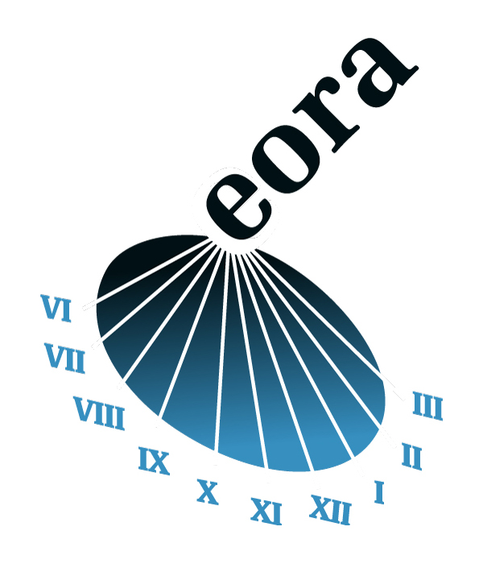

Ervaring
Meer dan 25 jaar met plezier Java development
-

1997 - 2000
Rijks Computercentrum
Als trainee het ontstaan van Java hebben meegemaakt en sinsdien dat hebben toegepast bij de realisatie van meerdere projecten binnen de Overheid.
-
2000 – 2007
CapGemini Nederland
Gedetacheerd bij verschillende klanten zoals DSM, Schiphol, Omron Europe en ING. De focus lag bij het gebruik van Java voor de integratie tussen Documentum en omliggende systemen.
-

Januari 2007
De oprichting van Eora
Samen met een compagnon is Eora opgericht. De realisatie van systemen werd aangevuld door lifecycle management. Onze klanten waren Schiphol, Omron Europe, ING en de Gemeente Amsterdam. De dienstverlening was gericht op Documentum implementaties.
-
Freelance
Juli 2017
Downsize naar Freelance
Voor een betere werk-privé balance is de stap gemaakt naar freelance. De activiteiten zijn verschoven naar individuele inzet via brokers in de markt.
-
Be Part
Of My
Story!